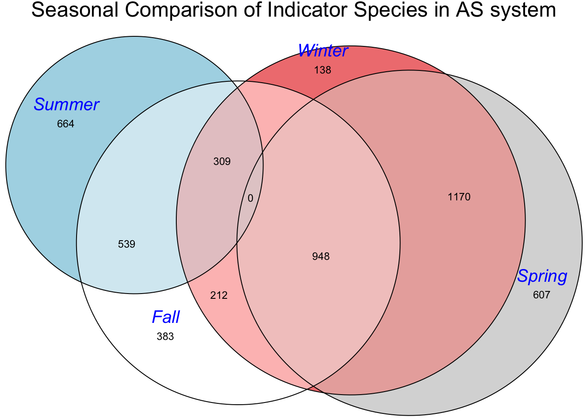
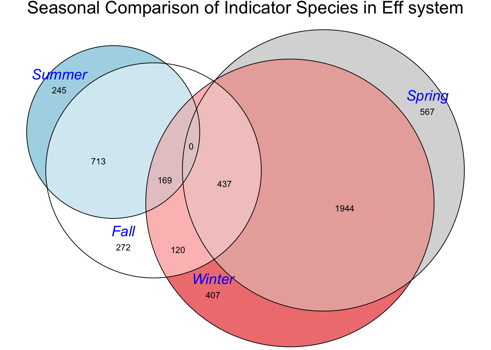
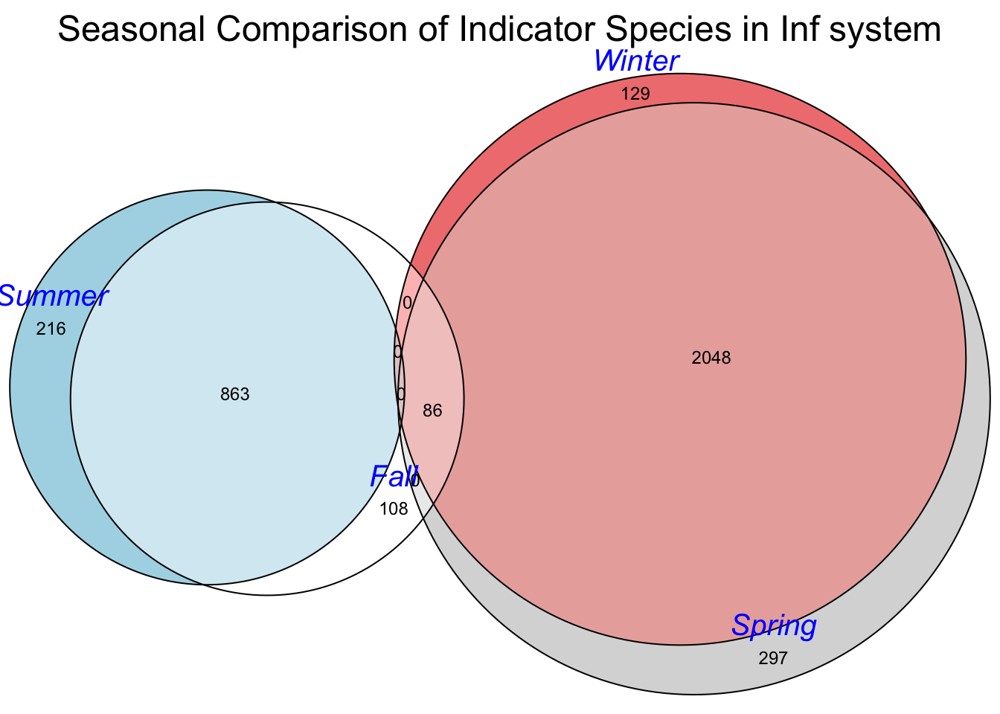

library(indicspecies)
library(ggplot2)
library(tibble)
library(readxl)
library(dplyr)
library(ape)
library(tidyr)
library(tidyverse)
library(ggvenn)
library(fmsb)
library(eulerr)
library(plotly)Indicator Species
Loading dependencies
Analysis on the 7 wwtp processes:
abundance_table <- read_excel("/Users/julietmalkowski/Desktop/Research/Kinetic_Model/abundance_table.xlsx")
#remove first 4 characters in every column name
colnames(abundance_table)<- substr(colnames(abundance_table), 5, nchar(colnames(abundance_table)))
abundance_table = as.data.frame(abundance_table)
#split first column by character '_' into two seperate columns
abundance_table[c('Process', 'Date')] <- str_split_fixed(abundance_table$le, '_', 2)
#drop le column
abundance_table = abundance_table[,-1]
#move last two columns to the front
abundance_table <- abundance_table %>%
select(Process, everything())
abundance_table <- abundance_table %>%
select(Date, everything())
#split first column by character '_' into two separate columns
abundance_table[c('Month', 'Year')] <- str_split_fixed(abundance_table$Date, '/', 2)
abundance_table <- abundance_table %>%
select(Month, everything())
#turn Month column into numeric
abundance_table$Month <- as.numeric(abundance_table$Month)
#Change AS-1 and AS-2 to AS
abundance_table$Process <- gsub("AS-1", "AS", abundance_table$Process)
abundance_table$Process <- gsub("AS-2", "AS", abundance_table$Process)
### Looking at each process
# Codes for each group:
# AD = 1
# AS = 2
# Eff = 3
# Inf = 4
# TF = 5
# TSS = 6
# WAS = 7
#Replace process names with codes
abundance_table$Process <- gsub("AD", "1", abundance_table$Process)
abundance_table$Process <- gsub("AS", "2", abundance_table$Process)
abundance_table$Process <- gsub("Eff", "3", abundance_table$Process)
abundance_table$Process <- gsub("Inf", "4", abundance_table$Process)
abundance_table$Process <- gsub("TF", "5", abundance_table$Process)
abundance_table$Process <- gsub("TSS", "6", abundance_table$Process)
abundance_table$Process <- gsub("W2", "7", abundance_table$Process)
df1 <- abundance_table %>%
select(-Year, -Date,-Month)
#Running Indicator Species Analysis
groupings = df1$Process
#duleg = TRUE which means that site group combinations will not be considered
indval <- multipatt(df1[,c(2:ncol(df1))], groupings,
control = how(nperm=999),duleg = TRUE)
sig.otus <- indval$sign %>% mutate(otu = rownames(.)) %>% filter(p.value < 0.01) %>% filter(stat > 0.5)
sig.otus <- indval$sign %>% mutate(index = case_when(index == 1 ~ "AD",
index == 2 ~ "AS",
index == 3 ~ "Eff",
index == 4 ~ "Inf",
index == 5 ~ "TF",
index == 6 ~ "TSS",
index == 7 ~ "WAS"))
sig.otus <- sig.otus %>% mutate(otu = rownames(.)) %>%
filter(p.value < 0.05) %>% filter(stat > 0.5) %>%
select(index, stat, p.value, otu) %>%
mutate(OTU = paste0("Zotu",otu)) Attaching taxonomic informaiton to indicator species in each group
Shown by variables: ad, as, eff, inf, tf, tss, and was
taxa = read_excel("/Users/julietmalkowski/Desktop/Research/Kinetic_Model/tax.xlsx")New names:
• `` -> `...1`merged_df <- merge(sig.otus, taxa[, c("OTU", "genus")], by = "OTU")
#create a new dataframe for each unique index value
grouped_list <- merged_df %>%
group_by(index) %>%
summarize(Values = list(genus))
ad <- unique(grouped_list$Values[grouped_list$index == "AD"][[1]])
as <- unique(grouped_list$Values[grouped_list$index == "AS"][[1]])
eff <- unique(grouped_list$Values[grouped_list$index == "Eff"][[1]])
inf <- unique(grouped_list$Values[grouped_list$index == "Inf"][[1]])
tf <- unique(grouped_list$Values[grouped_list$index == "TF"][[1]])
tss <- unique(grouped_list$Values[grouped_list$index == "TSS"][[1]])
was <- unique(grouped_list$Values[grouped_list$index == "WAS"][[1]])AD Species
print(ad) [1] "Fervidobacterium"
[2] "Clostridia_vadinBB60_group"
[3] "uncultured"
[4] "Hydrogenispora"
[5] "Luteolibacter"
[6] "D8A-2"
[7] "Ruminiclostridium"
[8] "Dethiobacter"
[9] "Hungateiclostridiaceae"
[10] "Limnochordaceae"
[11] "Caldicoprobacter"
[12] "IheB3-7"
[13] "Cloacibacterium"
[14] "JGI-0000079-D21"
[15] "Edaphobaculum"
[16] "Tepidimicrobium"
[17] "Keratinibaculum"
[18] "Defluviitoga"
[19] "Monoglobus"
[20] "Acetomicrobium"
[21] "Herbinix"
[22] "Syntrophaceticus"
[23] "Aminicenantales"
[24] "Pelotomaculum"
[25] "Candidatus_Soleaferrea"
[26] "Coprothermobacter"
[27] "Devosia"
[28] "Thermoclostridium"
[29] "Flavobacterium"
[30] "Candidatus_Caldatribacterium"
[31] "HN-HF0106"
[32] "Sporanaerobacter"
[33] "Hungateiclostridium"
[34] "MBA03"
[35] "Syntrophomonas"
[36] "Imtechella"
[37] "Lutispora"
[38] "Acinetobacter"
[39] "DTU014"
[40] "RF39"
[41] "Candidatus_Accumulibacter"
[42] "AKYH767"
[43] "Proteiniborus"
[44] "Lactococcus"
[45] "Lentimicrobium"
[46] "Beggiatoa"
[47] "Tepidanaerobacter"
[48] "Paludibacter"
[49] "Dechloromonas"
[50] "PeM15"
[51] "Desulfitibacter"
[52] "Thermogutta"
[53] "Streptococcus"
[54] "[Eubacterium]_coprostanoligenes_group"
[55] "Gelria"
[56] "[Ruminococcus]_torques_group"
[57] "Dictyoglomus"
[58] "Deinococcus"
[59] "Brooklawnia"
[60] "Rhizobacter"
[61] "Rhodobacter"
[62] "Defluviitalea"
[63] "Zoogloea"
[64] "Crassaminicella"
[65] "Aquabacterium"
[66] "Propioniciclava"
[67] "NK4A214_group"
[68] "Runella"
[69] "Ferribacterium"
[70] "UCG-010"
[71] "Pla1_lineage"
[72] "Bifidobacterium"
[73] "Haliscomenobacter"
[74] "Leucobacter"
[75] "Lentimicrobiaceae"
[76] "Macellibacteroides"
[77] "Saccharimonadales"
[78] "BSV13"
[79] "alphaI_cluster"
[80] "Acidibacter"
[81] "Izemoplasmatales"
[82] "Symbiobacterium"
[83] "Limnohabitans"
[84] "Ga0077536"
[85] "Pseudarcobacter"
[86] "Proteiniphilum"
[87] "0319-6G20"
[88] "Williamwhitmania"
[89] "Bacteroides"
[90] "KD1-131"
[91] "Alkanindiges"
[92] "CL500-29_marine_group"
[93] "Methylotenera"
[94] "UBA10353_marine_group"
[95] "Pseudomonas"
[96] "mle1-27"
[97] "Acidovorax"
[98] "SBR1031"
[99] "Sphingoaurantiacus"
[100] "UCG-012"
[101] "Candidatus_Moranbacteria"
[102] "37-13"
[103] "Fluviicola"
[104] "[Agitococcus]_lubricus_group"
[105] "Trichococcus"
[106] "Leptotrichia"
[107] "NS11-12_marine_group"
[108] "Romboutsia"
[109] "Novosphingobium"
[110] "Diaphorobacter"
[111] "Ottowia"
[112] "BRH-c20a"
[113] "[Ruminococcus]_gnavus_group"
[114] "Candidatus_Megaira"
[115] "Moraxella"
[116] "Comamonas"
[117] "Citrobacter"
[118] "Tolumonas"
[119] "Micropruina"
[120] "Microbacterium"
[121] "Arsenicicoccus"
[122] "Anaerolineaceae_UCG-001"
[123] "Candidatus_Hydrogenedens"
[124] "Raoultella"
[125] "Mycobacterium"
[126] "Syntrophorhabdus"
[127] "Hydrogenedensaceae"
[128] "Shinella"
[129] "Thermomonas"
[130] "Marmoricola"
[131] "Thiobacillus"
[132] "Amaricoccus"
[133] "Mitochondria"
[134] "B55-F-B-G02"
[135] "Bdellovibrio"
[136] "Hydrothermae"
[137] "Syntrophothermus"
[138] "Enterobacter"
[139] "Lacihabitans"
[140] "Sphingomonas"
[141] "MSBL3"
[142] "Aeromonas"
[143] "Haliangium"
[144] "Thermanaerovibrio"
[145] "Paucibacter"
[146] "Bacteroidetes_vadinHA17"
[147] "Limnochordia"
[148] "Faecalibacterium"
[149] "Mesorhizobium"
[150] "Propionicimonas"
[151] "Propionicicella"
[152] "env.OPS_17"
[153] "Clostridium_sensu_stricto_8"
[154] "Hyphomicrobium"
[155] "Paracoccus"
[156] "Ruminococcus"
[157] "Gordonia"
[158] "SM2D12"
[159] "AKIW659"
[160] "Conexibacter"
[161] "Candidatus_Captivus"
[162] "Arcobacter"
[163] "RBG-16-49-21"
[164] "Clostridium_sensu_stricto_1"
[165] "Ochrobactrum"
[166] "Family_XIII_AD3011_group"
[167] "Pleomorphomonas"
[168] "Kapabacteriales"
[169] "Acetobacteroides"
[170] "Fusicatenibacter"
[171] "Thiothrix"
[172] "Vogesella"
[173] "Gastranaerophilales"
[174] "Propionivibrio"
[175] "Blautia"
[176] "Tetrasphaera"
[177] "Empedobacter"
[178] "Laribacter"
[179] "Lachnospiraceae_ND3007_group"
[180] "Ellin516"
[181] "Pelosinus"
[182] "SD04E11"
[183] "Erysipelothrix"
[184] "Curvibacter"
[185] "Intestinibacter"
[186] "Opitutus"
[187] "Thauera"
[188] "Aestuariimicrobium"
[189] "WS1"
[190] "LCP-89"
[191] "Chryseobacterium"
[192] "Chthonomonadales"
[193] "Kluyvera"
[194] "Sphingobium"
[195] "M55-D21"
[196] "Rhodoferax"
[197] "Turicibacter"
[198] "Subdoligranulum"
[199] "Geothrix"
[200] "UCG-002"
[201] "Christensenellaceae_R-7_group"
[202] "053A03-B-DI-P58"
[203] "Megamonas"
[204] "Moorella" AS Species
print(as) [1] "uncultured" "Sphaerotilus"
[3] "Novosphingobium" "[Agitococcus]_lubricus_group"
[5] "WCHB1-32" "Sericytochromatia"
[7] "Zoogloea" "Fluviicoccus"
[9] "Methylorosula" "Hydrogenophaga"
[11] "Edaphobaculum" "Rhodoferax"
[13] "Candidatus_Accumulibacter" "Lentimicrobiaceae"
[15] "Pajaroellobacter" "DEV114"
[17] "Flavobacterium" "Dechloromonas"
[19] "Ferruginibacter" "Haliangium"
[21] "37-13" "Sphingobium"
[23] "env.OPS_17" "Methyloversatilis"
[25] "Leptothrix" "Ferribacterium"
[27] "Bacteriovorax" "Hylemonella"
[29] "Methylotenera" "Sulfuritalea"
[31] "Simplicispira" "Nannocystis"
[33] "AAP99" "Halomonas" Eff Species
print(eff) [1] "Pseudomonas"
[2] "Aquaspirillum"
[3] "Clostridium_sensu_stricto_12"
[4] "Acinetobacter"
[5] "Rhodoferax"
[6] "Imtechella"
[7] "Edaphobaculum"
[8] "Babeliales"
[9] "Giesbergeria"
[10] "JTB23"
[11] "uncultured"
[12] "Trichococcus"
[13] "Flavobacterium"
[14] "Lactococcus"
[15] "Megamonas"
[16] "Limnohabitans"
[17] "Sphingobium"
[18] "Chloroplast"
[19] "Pelosinus"
[20] "Polynucleobacter"
[21] "Allobacillus"
[22] "Hydrogenophaga"
[23] "Ottowia"
[24] "Candidatus_Paracaedibacter"
[25] "env.OPS_17"
[26] "Pelomonas"
[27] "Comamonas"
[28] "Clostridium_sensu_stricto_1"
[29] "Romboutsia"
[30] "Lachnospiraceae_ND3007_group"
[31] "Victivallaceae"
[32] "Allorhizobium-Neorhizobium-Pararhizobium-Rhizobium"
[33] "Prosthecobacter"
[34] "Pedobacter"
[35] "Paucibacter"
[36] "Aquabacterium"
[37] "SM2D12"
[38] "Unknown_Family"
[39] "Curvibacter"
[40] "Lysobacter"
[41] "Novosphingobium"
[42] "Mycobacterium"
[43] "GKS98_freshwater_group"
[44] "Cloacibacterium"
[45] "Polaromonas"
[46] "Thiothrix"
[47] "TM7x"
[48] "Saccharimonadales"
[49] "Holdemanella"
[50] "Bdellovibrio"
[51] "Streptococcus"
[52] "RF39"
[53] "Mitochondria"
[54] "Coxiella"
[55] "Cephaloticoccus"
[56] "Gracilibacteria"
[57] "Leptothrix"
[58] "Rhodococcus"
[59] "Dechloromonas"
[60] "Acidovorax"
[61] "Propionivibrio"
[62] "Bact-08"
[63] "Lutispora"
[64] "Bifidobacterium"
[65] "Mitsuokella"
[66] "Candidatus_Gortzia"
[67] "Alcaligenaceae"
[68] "Chryseobacterium"
[69] "Zoogloea"
[70] "Sulfuricurvum"
[71] "Fluviicola"
[72] "Sphingomonas" Inf Species
print(inf) [1] "Faecalibacterium"
[2] "Aeromonas"
[3] "Hydrogenophaga"
[4] "Prevotella"
[5] "Janthinobacterium"
[6] "Negativibacillus"
[7] "Rivicola"
[8] "Chryseobacterium"
[9] "Pseudomonas"
[10] "Arcobacter"
[11] "Hypnocyclicus"
[12] "Butyricicoccus"
[13] "Parabacteroides"
[14] "Roseburia"
[15] "Flavobacterium"
[16] "Subdoligranulum"
[17] "Bacteroides"
[18] "Lactococcus"
[19] "Coprococcus"
[20] "Leucobacter"
[21] "Blautia"
[22] "Tolumonas"
[23] "UCG-002"
[24] "Tyzzerella"
[25] "[Eubacterium]_siraeum_group"
[26] "[Agitococcus]_lubricus_group"
[27] "Pseudarcobacter"
[28] "Rhodoferax"
[29] "Lachnospiraceae_NK4A136_group"
[30] "Comamonas"
[31] "Coprothermobacter"
[32] "uncultured"
[33] "Propionivibrio"
[34] "Lachnospira"
[35] "Zoogloea"
[36] "Formivibrio"
[37] "Bifidobacterium"
[38] "Macellibacteroides"
[39] "Cloacibacterium"
[40] "Sulfurospirillum"
[41] "Microbacterium"
[42] "Akkermansia"
[43] "Acinetobacter"
[44] "Monoglobus"
[45] "Dorea"
[46] "Phascolarctobacterium"
[47] "[Eubacterium]_coprostanoligenes_group"
[48] "Erysipelotrichaceae_UCG-003"
[49] "Vogesella"
[50] "Holdemanella"
[51] "Lelliottia"
[52] "Malikia"
[53] "Sutterella"
[54] "Raoultella"
[55] "Microvirgula"
[56] "Desulfovibrio"
[57] "Catenisphaera"
[58] "UCG-003"
[59] "[Ruminococcus]_gauvreauii_group"
[60] "Incertae_Sedis"
[61] "Oscillibacter"
[62] "Rhodobacter"
[63] "Shewanella"
[64] "Ruminococcus"
[65] "Agathobacter"
[66] "Paludibacter"
[67] "Mitochondria"
[68] "Undibacterium"
[69] "Collinsella"
[70] "Dechloromonas" TF Species
print(tf) [1] "Pseudarcobacter"
[2] "Pseudomonas"
[3] "Zoogloea"
[4] "FTLpost3"
[5] "uncultured"
[6] "Flavobacterium"
[7] "Absconditabacteriales_"
[8] "Bergeyella"
[9] "Leeia"
[10] "Hydrogenophaga"
[11] "BSV13"
[12] "Chryseobacterium"
[13] "Novosphingobium"
[14] "Beggiatoaceae"
[15] "Undibacterium"
[16] "Dechloromonas"
[17] "Acinetobacter"
[18] "Bacteroides"
[19] "Prevotella"
[20] "Terrimonas"
[21] "Lachnospira"
[22] "Agathobacter"
[23] "Collinsella"
[24] "Allobacillus"
[25] "Acidovorax"
[26] "Simplicispira"
[27] "Paludibacter"
[28] "Soonwooa"
[29] "Geobacter"
[30] "Fusibacter"
[31] "T34"
[32] "Sulfuricurvum"
[33] "Lactococcus"
[34] "GWE2-42-42"
[35] "Rivicola"
[36] "Thiothrix"
[37] "Comamonas"
[38] "KD1-131"
[39] "Allorhizobium-Neorhizobium-Pararhizobium-Rhizobium"
[40] "Erysipelotrichaceae_UCG-003"
[41] "Mariprofundus"
[42] "Ruminococcus"
[43] "Janthinobacterium"
[44] "LCP-89"
[45] "Dialister"
[46] "Akkermansia"
[47] "Quatrionicoccus"
[48] "Rhodoferax"
[49] "Polaromonas"
[50] "Williamwhitmania"
[51] "Cloacibacterium"
[52] "Aeromonas"
[53] "Alistipes"
[54] "Coprothermobacter"
[55] "Fonticella"
[56] "Aquabacterium"
[57] "env.OPS_17"
[58] "Propionivibrio"
[59] "Candidatus_Accumulibacter"
[60] "M2PB4-65_termite_group"
[61] "Diaphorobacter"
[62] "[Cytophaga]_xylanolytica_group"
[63] "WCHB1-32"
[64] "Erysipelothrix"
[65] "Lachnospiraceae_NK4A136_group"
[66] "Alkanindiges" TSS Species
print(tss) [1] "Zoogloea"
[2] "Pelosinus"
[3] "Prevotella"
[4] "Bacteroides"
[5] "Moraxella"
[6] "uncultured"
[7] "PeM15"
[8] "Paludibacter"
[9] "Weeksellaceae"
[10] "Enterobacter"
[11] "XBB1006"
[12] "Streptococcus"
[13] "Comamonas"
[14] "Clostridium_sensu_stricto_1"
[15] "Cloacibacterium"
[16] "Clostridium_sensu_stricto_12"
[17] "Sulfurospirillum"
[18] "Brachymonas"
[19] "Klebsiella"
[20] "Clostridium_sensu_stricto_13"
[21] "Sebaldella"
[22] "Vitreoscilla"
[23] "Diaphorobacter"
[24] "Pseudarcobacter"
[25] "Ottowia"
[26] "Sphaerotilus"
[27] "Raoultella"
[28] "Alkanindiges"
[29] "Eubacterium"
[30] "Chryseobacterium"
[31] "Mycobacterium"
[32] "Macellibacteroides"
[33] "Empedobacter"
[34] "Veillonella"
[35] "Propionispira"
[36] "Laribacter"
[37] "Paracoccus"
[38] "Stenoxybacter"
[39] "[Agitococcus]_lubricus_group"
[40] "Nakamurella"
[41] "Uruburuella"
[42] "Clostridium_sensu_stricto_7"
[43] "Novosphingobium"
[44] "Leptotrichia"
[45] "Propioniciclava"
[46] "Pleomorphomonas"
[47] "T34"
[48] "Dysgonomonas"
[49] "Butyrivibrio"
[50] "Propionivibrio"
[51] "Incertae_Sedis"
[52] "Uliginosibacterium"
[53] "Tolumonas"
[54] "Neisseria"
[55] "Geobacter"
[56] "Anaerospora"
[57] "Arcobacter"
[58] "Shuttleworthia"
[59] "Citrobacter"
[60] "Acidovorax"
[61] "Christensenellaceae_R-7_group"
[62] "Rivicola"
[63] "Desulfovibrio"
[64] "Niveibacterium"
[65] "Micropruina"
[66] "Rhizorhapis"
[67] "Sulfurovum"
[68] "Chelonobacter"
[69] "Saccharimonadales"
[70] "Dechloromonas"
[71] "Anaeromusa-Anaeroarcus"
[72] "Phenylobacterium"
[73] "Aquaspirillum"
[74] "Flavobacterium"
[75] "Candidatus_Accumulibacter"
[76] "alphaI_cluster"
[77] "Acinetobacter"
[78] "Azorhizobium"
[79] "Coprothermobacter"
[80] "Aeromonas"
[81] "Luteococcus"
[82] "Tessaracoccus"
[83] "Gemmobacter"
[84] "Sphingomonas"
[85] "Kluyvera"
[86] "Yersinia"
[87] "Pseudorhodobacter"
[88] "Thauera"
[89] "Allorhizobium-Neorhizobium-Pararhizobium-Rhizobium"
[90] "Pasteurella"
[91] "Enhydrobacter"
[92] "Peptostreptococcus"
[93] "Paludibacterium"
[94] "KD1-131"
[95] "Acidaminococcus"
[96] "Formivibrio"
[97] "Lactococcus" WAS Species
print(was) [1] "Cephaloticoccus" "Thiothrix"
[3] "uncultured" "Rhodoferax"
[5] "Zoogloea" "WCHB1-32"
[7] "NS11-12_marine_group" "Fluviicoccus"
[9] "Sericytochromatia" "Comamonas"
[11] "Phreatobacter" "Rurimicrobium"
[13] "Luteolibacter" "Novosphingobium"
[15] "Hydrogenophaga" "Pajaroellobacter"
[17] "Roseomonas" "Limnohabitans"
[19] "Arcicella" "Phaselicystis"
[21] "Candidatus_Electronema" "Aquabacterium"
[23] "Hydrogenedensaceae" "Haliangium"
[25] "Ottowia" "env.OPS_17"
[27] "Sphingobium" "Dechloromonas"
[29] "Aquimonas" "37-13"
[31] "Gemmatimonas" "mle1-27"
[33] "Thermomonas" "[Agitococcus]_lubricus_group"
[35] "Christensenellaceae_R-7_group" "Ferribacterium"
[37] "Flavobacterium" "Desulfomicrobium"
[39] "Pseudorhodobacter" "Lentimicrobiaceae"
[41] "Tetrasphaera" "Pelomonas"
[43] "Paludibacter" "Ferruginibacter"
[45] "Opitutus" "M2PB4-65_termite_group"
[47] "Prosthecobacter" "Geothrix"
[49] "Alkanindiges" "SH-PL14"
[51] "Leptothrix" Looking at different seasons for each process
assign_season <- function(Month) {
if (Month %in% c(12, 01, 02)) {
return("Winter")
} else if (Month %in% c(03, 04, 05)) {
return("Spring")
} else if (Month %in% c(06, 07, 08)) {
return("Summer")
} else if (Month %in% c(09, 10, 11)) {
return("Fall")
} else {
return(NA)
}
}
df <- abundance_table %>%
mutate(Season = sapply(Month, assign_season)) %>%
group_by(Season, Process) %>%
mutate(Group = cur_group_id()) %>%
ungroup()
df <- df %>% select(Group,Process, Season, Month, everything())
#Codes for each group:
# AD-Fall = 1
# AS-Fall = 2
# Eff-Fall = 3
# Inf-Fall = 4
# TF-Fall = 5
# TSS_Fall = 6
# WAS-Fall = 7
# AD-Spring = 8
# AS-Spring = 9
# Eff-Spring = 10
# Inf-Spring = 11
# TF-Spring = 12
# TSS-Spring = 13
# WAS-Spring = 14
# AD-Summer = 15
# AS-Summer = 16
# Eff-Summer = 17
# Inf-Summer = 18
# TF-Summer = 19
# TSS-Summer = 20
# WAS-Summer = 21
# AD-Winter = 22
# AS-Winter = 23
# Eff-Winter = 24
# Inf-Winter = 25
# TF-Winter = 26
# TSS-Winter = 27
# WAS-Winter = 28
#Now we have our dataframe that contains a unique group number for each process and season
df <- df %>%
select(-Year, -Process, -Date, -Season, -Month)
#Species groups
AD = c(1, 8, 15, 22)
AS = c(2, 9, 16, 23)
Eff = c(3, 10, 17, 24)
Inf_ = c(4, 11, 18, 25)
TF = c(5, 12, 19, 26)
TSS = c(6, 13, 20, 27)
WAS = c(7, 14, 21, 28)
#Individual Species Analysis
ad_df = df %>% filter(Group %in% AD)
as_df = df %>% filter(Group %in% AS)
eff_df = df %>% filter(Group %in% Eff)
inf_df = df %>% filter(Group %in% Inf_)
tf_df = df %>% filter(Group %in% TF)
tss_df = df %>% filter(Group %in% TSS)
was_df = df %>% filter(Group %in% WAS)Anaerobic Digester
#AD
groupings = ad_df$Group
indval_ad <- multipatt(ad_df[,c(2:ncol(ad_df))], groupings,
control = how(nperm=999),duleg = FALSE)
#change index column values if index=1 then change to AD-Fall etc
ad_sig.otus <- indval_ad$sign %>% mutate(index = case_when(index == 1 ~ "Fall",
index == 2 ~ "Spring",
index == 3 ~ "Summer",
index == 4 ~ "Winter",
index == 5 ~ "Fall-Spring",
index == 6 ~ "Fall-Summer",
index == 7 ~ "Fall-Winter",
index == 8 ~ "Spring-Summer",
index == 9 ~ "Spring-Winter",
index == 10 ~ "Summer-Winter",
index == 11 ~ "Fall-Spring-Summer",
index == 12 ~ "Fall-Spring-Winter",
index == 13 ~ "Fall-Summer-Winter",
index == 14 ~ "Spring-Summer-Winter",
index == 15 ~ "Fall-Spring-Summer-Winter"
))
ad_sig.otus <- ad_sig.otus %>% mutate(otu = rownames(.)) %>%
filter(p.value < 0.05) %>% filter(stat > 0.5) %>%
select(index, stat, p.value, otu) %>%
mutate(Value = paste0("Zotu",otu))%>%
rename(OTU = Value)
grouped_list_ad <- ad_sig.otus %>%
group_by(index) %>%
summarize(Values = list(OTU))
# Define the sizes of each set and their intersections
set_sizes <- c(
Fall = ad_sig.otus %>% filter(index == "Fall") %>% nrow(),
Spring = ad_sig.otus %>% filter(index == "Spring") %>% nrow(),
Summer = ad_sig.otus %>% filter(index == "Summer") %>% nrow(),
Winter = ad_sig.otus %>% filter(index == "Winter") %>% nrow(),
"Fall&Spring" = ad_sig.otus %>% filter(index == "Fall-Spring") %>% nrow(),
"Fall&Summer" = ad_sig.otus %>% filter(index == "Fall-Summer") %>% nrow(),
"Fall&Winter" = ad_sig.otus %>% filter(index == "Fall-Winter") %>% nrow(),
"Spring&Summer" = ad_sig.otus %>% filter(index == "Spring-Summer") %>% nrow(),
"Spring&Winter" = ad_sig.otus %>% filter(index == "Spring-Winter") %>% nrow(),
"Summer&Winter" = ad_sig.otus %>% filter(index == "Summer-Winter") %>% nrow(),
"Fall&Spring&Summer" = ad_sig.otus %>% filter(index == "Fall-Spring-Summer") %>% nrow(),
"Fall&Spring&Winter" = ad_sig.otus %>% filter(index == "Fall-Spring-Winter") %>% nrow(),
"Fall&Summer&Winter" = ad_sig.otus %>% filter(index == "Fall-Summer-Winter") %>% nrow(),
"Spring&Summer&Winter" = ad_sig.otus %>% filter(index == "Spring-Summer-Winter") %>% nrow(),
"Fall&Spring&Summer&Winter" = ad_sig.otus %>% filter(index == "Fall-Spring-Summer-Winter") %>% nrow()
)
# Function to filter out small overlaps
filter_data <- function(data, threshold = 0.01) {
# Calculate the total size
total <- sum(data)
# Filter out entries that are below the threshold percentage of the total size
filtered_data <- data[data / total >= threshold]
return(filtered_data)
}
# Filter the data
filtered_data <- filter_data(set_sizes)
# Create the Euler diagram
fit <- euler(filtered_data)
# Plot the Euler diagram
# Plot the Euler diagram
plot(fit, labels = list(font = 3, col = "blue", cex = 1.25),
quantities = list(type = "counts", font = 1, col = "black", cex = 0.75), main = "Seasonal Comparison of Indicator Species in AD system")AD Seasonal Indicator Species
merged_df_ad <- merge(ad_sig.otus, taxa[, c("OTU", "genus")], by = "OTU")
grouped_list_ad <- ad_sig.otus %>%
group_by(index) %>%
summarize(Values = list(OTU))
fall_ad <- unique(grouped_list_ad$Values[grouped_list_ad$index == "Fall"][[1]])
spring_ad <- unique(grouped_list_ad$Values[grouped_list_ad$index == "Spring"][[1]])
summer_ad <- unique(grouped_list_ad$Values[grouped_list_ad$index == "Summer"][[1]])
winter_ad <- unique(grouped_list_ad$Values[grouped_list_ad$index == "Winter"][[1]])
fall_spring_ad <- unique(grouped_list_ad$Values[grouped_list_ad$index == "Fall-Spring"][[1]])
fall_summer_ad <- unique(grouped_list_ad$Values[grouped_list_ad$index == "Fall-Summer"][[1]])
fall_winter_ad <- unique(grouped_list_ad$Values[grouped_list_ad$index == "Fall-Winter"][[1]])
spring_summer_ad <- unique(grouped_list_ad$Values[grouped_list_ad$index == "Spring-Summer"][[1]])
spring_winter_ad <- unique(grouped_list_ad$Values[grouped_list_ad$index == "Spring-Winter"][[1]])
fall_spring_summer_ad <- unique(grouped_list_ad$Values[grouped_list_ad$index == "Fall-Spring-Summer"][[1]])
fall_spring_winter_ad <- unique(grouped_list_ad$Values[grouped_list_ad$index == "Fall-Spring-Winter"][[1]])
fall_summer_winter_ad <- unique(grouped_list_ad$Values[grouped_list_ad$index == "Fall-Summer-Winter"][[1]])Activated Sludge
#AS
groupings = as_df$Group
indval_as <- multipatt(as_df[,c(2:ncol(as_df))], groupings,
control = how(nperm=999),duleg = FALSE)
#change index column values if index=1 then change to AD-Fall etc
as_sig.otus <- indval_as$sign %>% mutate(index = case_when(index == 1 ~ "Fall",
index == 2 ~ "Spring",
index == 3 ~ "Summer",
index == 4 ~ "Winter",
index == 5 ~ "Fall-Spring",
index == 6 ~ "Fall-Summer",
index == 7 ~ "Fall-Winter",
index == 8 ~ "Spring-Summer",
index == 9 ~ "Spring-Winter",
index == 10 ~ "Summer-Winter",
index == 11 ~ "Fall-Spring-Summer",
index == 12 ~ "Fall-Spring-Winter",
index == 13 ~ "Fall-Summer-Winter",
index == 14 ~ "Spring-Summer-Winter",
index == 15 ~ "Fall-Spring-Summer-Winter"
))
as_sig.otus <- as_sig.otus %>% mutate(otu = rownames(.)) %>%
filter(p.value < 0.05) %>% filter(stat > 0.5) %>%
select(index, stat, p.value, otu) %>%
mutate(Value = paste0("Zotu",otu))%>%
rename(OTU = Value)
grouped_list_as <- as_sig.otus %>%
group_by(index) %>%
summarize(Values = list(OTU))
# Define the sizes of each set and their intersections
set_sizes_as <- c(
Fall = as_sig.otus %>% filter(index == "Fall") %>% nrow(),
Spring = as_sig.otus %>% filter(index == "Spring") %>% nrow(),
Summer = as_sig.otus %>% filter(index == "Summer") %>% nrow(),
Winter = as_sig.otus %>% filter(index == "Winter") %>% nrow(),
"Fall&Spring" = as_sig.otus %>% filter(index == "Fall-Spring") %>% nrow(),
"Fall&Summer" = as_sig.otus %>% filter(index == "Fall-Summer") %>% nrow(),
"Fall&Winter" = as_sig.otus %>% filter(index == "Fall-Winter") %>% nrow(),
"Spring&Summer" = as_sig.otus %>% filter(index == "Spring-Summer") %>% nrow(),
"Spring&Winter" = as_sig.otus %>% filter(index == "Spring-Winter") %>% nrow(),
"Summer&Winter" = as_sig.otus %>% filter(index == "Summer-Winter") %>% nrow(),
"Fall&Spring&Summer" = as_sig.otus %>% filter(index == "Fall-Spring-Summer") %>% nrow(),
"Fall&Spring&Winter" = as_sig.otus %>% filter(index == "Fall-Spring-Winter") %>% nrow(),
"Fall&Summer&Winter" = as_sig.otus %>% filter(index == "Fall-Summer-Winter") %>% nrow(),
"Spring&Summer&Winter" = as_sig.otus %>% filter(index == "Spring-Summer-Winter") %>% nrow(),
"Fall&Spring&Summer&Winter" = as_sig.otus %>% filter(index == "Fall-Spring-Summer-Winter") %>% nrow()
)
# Filter the data
filtered_data_as <- filter_data(set_sizes_as)
# Create the Euler diagram
fit_as <- euler(filtered_data_as)
# Plot the Euler diagram
plot(fit_as, labels = list(font = 3, col = "blue", cex = 1.25),
quantities = list(type = "counts", font = 1, col = "black", cex = 0.75),
main = "Seasonal Comparison of Indicator Species in AS system")
AS Seasonal Indicator Species
merged_df_as <- merge(as_sig.otus, taxa[, c("OTU", "genus")], by = "OTU")
grouped_list_as <- as_sig.otus %>%
group_by(index) %>%
summarize(Values = list(OTU))
fall_as <- unique(grouped_list_as$Values[grouped_list_as$index == "Fall"][[1]])
spring_as <- unique(grouped_list_as$Values[grouped_list_as$index == "Spring"][[1]])
summer_as <- unique(grouped_list_as$Values[grouped_list_as$index == "Summer"][[1]])
winter_as <- unique(grouped_list_as$Values[grouped_list_as$index == "Winter"][[1]])
fall_spring_as <- unique(grouped_list_as$Values[grouped_list_as$index == "Fall-Spring"][[1]])
fall_summer_as <- unique(grouped_list_as$Values[grouped_list_as$index == "Fall-Summer"][[1]])
fall_winter_as <- unique(grouped_list_as$Values[grouped_list_as$index == "Fall-Winter"][[1]])
spring_summer_as <- unique(grouped_list_as$Values[grouped_list_as$index == "Spring-Summer"][[1]])
spring_winter_as <- unique(grouped_list_as$Values[grouped_list_as$index == "Spring-Winter"][[1]])
fall_spring_summer_as <- unique(grouped_list_as$Values[grouped_list_as$index == "Fall-Spring-Summer"][[1]])
fall_spring_winter_as <- unique(grouped_list_as$Values[grouped_list_as$index == "Fall-Spring-Winter"][[1]])
fall_summer_winter_as <- unique(grouped_list_as$Values[grouped_list_as$index == "Fall-Summer-Winter"][[1]])Effluent
#Eff
groupings = eff_df$Group
indval_eff <- multipatt(eff_df[,c(2:ncol(eff_df))], groupings,
control = how(nperm=999),duleg = FALSE)
#change index column values if index=1 then change to AD-Fall etc
eff_sig.otus <- indval_eff$sign %>% mutate(index = case_when(index == 1 ~ "Fall",
index == 2 ~ "Spring",
index == 3 ~ "Summer",
index == 4 ~ "Winter",
index == 5 ~ "Fall-Spring",
index == 6 ~ "Fall-Summer",
index == 7 ~ "Fall-Winter",
index == 8 ~ "Spring-Summer",
index == 9 ~ "Spring-Winter",
index == 10 ~ "Summer-Winter",
index == 11 ~ "Fall-Spring-Summer",
index == 12 ~ "Fall-Spring-Winter",
index == 13 ~ "Fall-Summer-Winter",
index == 14 ~ "Spring-Summer-Winter",
index == 15 ~ "Fall-Spring-Summer-Winter"
))
eff_sig.otus <- eff_sig.otus %>% mutate(otu = rownames(.)) %>%
filter(p.value < 0.05) %>% filter(stat > 0.5) %>%
select(index, stat, p.value, otu) %>%
mutate(Value = paste0("Zotu",otu))%>%
rename(OTU = Value)
#create a new dataframe for each unique index value
grouped_list_eff <- eff_sig.otus %>%
group_by(index) %>%
summarize(Values = list(OTU))
# Define the sizes of each set and their intersections
set_sizes_eff <- c(
Fall = eff_sig.otus %>% filter(index == "Fall") %>% nrow(),
Spring = eff_sig.otus %>% filter(index == "Spring") %>% nrow(),
Summer = eff_sig.otus %>% filter(index == "Summer") %>% nrow(),
Winter = eff_sig.otus %>% filter(index == "Winter") %>% nrow(),
"Fall&Spring" = eff_sig.otus %>% filter(index == "Fall-Spring") %>% nrow(),
"Fall&Summer" = eff_sig.otus %>% filter(index == "Fall-Summer") %>% nrow(),
"Fall&Winter" = eff_sig.otus %>% filter(index == "Fall-Winter") %>% nrow(),
"Spring&Summer" = eff_sig.otus %>% filter(index == "Spring-Summer") %>% nrow(),
"Spring&Winter" = eff_sig.otus %>% filter(index == "Spring-Winter") %>% nrow(),
"Summer&Winter" = eff_sig.otus %>% filter(index == "Summer-Winter") %>% nrow(),
"Fall&Spring&Summer" = eff_sig.otus %>% filter(index == "Fall-Spring-Summer") %>% nrow(),
"Fall&Spring&Winter" = eff_sig.otus %>% filter(index == "Fall-Spring-Winter") %>% nrow(),
"Fall&Summer&Winter" = eff_sig.otus %>% filter(index == "Fall-Summer-Winter") %>% nrow(),
"Spring&Summer&Winter" = eff_sig.otus %>% filter(index == "Spring-Summer-Winter") %>% nrow(),
"Fall&Spring&Summer&Winter" = eff_sig.otus %>% filter(index == "Fall-Spring-Summer-Winter") %>% nrow()
)
# Filter the data
filtered_data_eff <- filter_data(set_sizes_eff)
# Create the Euler diagram
fit_eff <- euler(filtered_data_eff)
# Plot the Euler diagram
plot(fit_eff,labels = list(font = 3, col = "blue", cex = 1.25),
quantities = list(type = "counts", font = 1, col = "black", cex = 0.75), main = "Seasonal Comparison of Indicator Species in Eff system")
Eff Seasonal Indicator Species
merged_df_eff <- merge(ad_sig.otus, taxa[, c("OTU", "genus")], by = "OTU")
grouped_list_eff <- eff_sig.otus %>%
group_by(index) %>%
summarize(Values = list(OTU))
fall_eff <- unique(grouped_list_eff$Values[grouped_list_eff$index == "Fall"][[1]])
spring_eff <-unique(grouped_list_eff$Values[grouped_list_eff$index == "Spring"][[1]])
summer_eff <- unique(grouped_list_eff$Values[grouped_list_eff$index == "Summer"][[1]])
winter_eff <-unique(grouped_list_eff$Values[grouped_list_eff$index == "Winter"][[1]])
fall_spring_eff <- unique(grouped_list_eff$Values[grouped_list_eff$index == "Fall-Spring"][[1]])
fall_summer_eff <- unique(grouped_list_eff$Values[grouped_list_eff$index == "Fall-Summer"][[1]])
fall_winter_eff <- unique(grouped_list_eff$Values[grouped_list_eff$index == "Fall-Winter"][[1]])
spring_summer_eff <- unique(grouped_list_eff$Values[grouped_list_eff$index == "Spring-Summer"][[1]])
spring_winter_eff <- unique(grouped_list_eff$Values[grouped_list_eff$index == "Spring-Winter"][[1]])
summer_winter_eff <- unique(grouped_list_eff$Values[grouped_list_eff$index == "Summer-Winter"][[1]])
fall_spring_summer_eff <- unique(grouped_list_eff$Values[grouped_list_eff$index == "Fall-Spring-Summer"][[1]])
fall_spring_winter_eff <- unique(grouped_list_eff$Values[grouped_list_eff$index == "Fall-Spring-Winter"][[1]])
fall_summer_winter_eff <- unique(grouped_list_eff$Values[grouped_list_eff$index == "Fall-Summer-Winter"][[1]])
spring_summer_winter_eff <- unique(grouped_list_eff$Values[grouped_list_eff$index == "Spring-Summer-Winter"][[1]])Influent
#Inf
groupings = inf_df$Group
indval_inf <- multipatt(inf_df[,c(2:ncol(inf_df))], groupings,
control = how(nperm=999),duleg = FALSE)
#change index column values if index=1 then change to AD-Fall etc
inf_sig.otus <- indval_inf$sign %>% mutate(index = case_when(index == 1 ~ "Fall",
index == 2 ~ "Spring",
index == 3 ~ "Summer",
index == 4 ~ "Winter",
index == 5 ~ "Fall-Spring",
index == 6 ~ "Fall-Summer",
index == 7 ~ "Fall-Winter",
index == 8 ~ "Spring-Summer",
index == 9 ~ "Spring-Winter",
index == 10 ~ "Summer-Winter",
index == 11 ~ "Fall-Spring-Summer",
index == 12 ~ "Fall-Spring-Winter",
index == 13 ~ "Fall-Summer-Winter",
index == 14 ~ "Spring-Summer-Winter",
index == 15 ~ "Fall-Spring-Summer-Winter"
))
inf_sig.otus <- inf_sig.otus %>% mutate(otu = rownames(.)) %>%
filter(p.value < 0.05) %>% filter(stat > 0.5) %>%
select(index, stat, p.value, otu) %>%
mutate(Value = paste0("Zotu",otu))%>%
rename(OTU = Value)
#create a new dataframe for each unique index value
grouped_list_inf <- inf_sig.otus %>%
group_by(index) %>%
summarize(Values = list(OTU))
# Define the sizes of each set and their intersections
set_sizes_inf <- c(
Fall = inf_sig.otus %>% filter(index == "Fall") %>% nrow(),
Spring = inf_sig.otus %>% filter(index == "Spring") %>% nrow(),
Summer = inf_sig.otus %>% filter(index == "Summer") %>% nrow(),
Winter = inf_sig.otus %>% filter(index == "Winter") %>% nrow(),
"Fall&Spring" = inf_sig.otus %>% filter(index == "Fall-Spring") %>% nrow(),
"Fall&Summer" = inf_sig.otus %>% filter(index == "Fall-Summer") %>% nrow(),
"Fall&Winter" = inf_sig.otus %>% filter(index == "Fall-Winter") %>% nrow(),
"Spring&Summer" = inf_sig.otus %>% filter(index == "Spring-Summer") %>% nrow(),
"Spring&Winter" = inf_sig.otus %>% filter(index == "Spring-Winter") %>% nrow(),
"Summer&Winter" = inf_sig.otus %>% filter(index == "Summer-Winter") %>% nrow(),
"Fall&Spring&Summer" = inf_sig.otus %>% filter(index == "Fall-Spring-Summer") %>% nrow(),
"Fall&Spring&Winter" = inf_sig.otus %>% filter(index == "Fall-Spring-Winter") %>% nrow(),
"Fall&Summer&Winter" = inf_sig.otus %>% filter(index == "Fall-Summer-Winter") %>% nrow(),
"Spring&Summer&Winter" = inf_sig.otus %>% filter(index == "Spring-Summer-Winter") %>% nrow(),
"Fall&Spring&Summer&Winter" = inf_sig.otus %>% filter(index == "Fall-Spring-Summer-Winter") %>% nrow()
)
# Filter the data
filtered_data_inf <- filter_data(set_sizes_inf)
# Create the Euler diagram
fit_inf <- euler(filtered_data_inf)
# Plot the Euler diagram
plot(fit_inf, labels = list(font = 3, col = "blue", cex = 1.25),
quantities = list(type = "counts", font = 1, col = "black", cex = 0.75), main = "Seasonal Comparison of Indicator Species in Inf system")
Inf Seasonal Indicator Species
merged_df_inf <- merge(inf_sig.otus, taxa[, c("OTU", "genus")], by = "OTU")
grouped_list_inf <- inf_sig.otus %>%
group_by(index) %>%
summarize(Values = list(OTU))
fall_inf <- unique(grouped_list_inf$Values[grouped_list_inf$index == "Fall"][[1]])
spring_inf <- unique(grouped_list_inf$Values[grouped_list_inf$index == "Spring"][[1]])
summer_inf <- unique(grouped_list_inf$Values[grouped_list_inf$index == "Summer"][[1]])
winter_inf <- unique(grouped_list_inf$Values[grouped_list_inf$index == "Winter"][[1]])
fall_spring_inf <- unique(grouped_list_inf$Values[grouped_list_inf$index == "Fall-Spring"][[1]])
fall_summer_inf <- unique(grouped_list_inf$Values[grouped_list_inf$index == "Fall-Summer"][[1]])
fall_winter_inf <- unique(grouped_list_inf$Values[grouped_list_inf$index == "Fall-Winter"][[1]])
spring_summer_inf <- unique(grouped_list_inf$Values[grouped_list_inf$index == "Spring-Summer"][[1]])
spring_winter_inf <- unique(grouped_list_inf$Values[grouped_list_inf$index == "Spring-Winter"][[1]])
summer_winter_inf <- unique(grouped_list_inf$Values[grouped_list_inf$index == "Summer-Winter"][[1]])
fall_spring_summer_inf <- unique(grouped_list_inf$Values[grouped_list_inf$index == "Fall-Spring-Summer"][[1]])
fall_spring_winter_inf <- unique(grouped_list_inf$Values[grouped_list_inf$index == "Fall-Spring-Winter"][[1]])
fall_summer_winter_inf <- unique(grouped_list_inf$Values[grouped_list_inf$index == "Fall-Summer-Winter"][[1]])
spring_summer_winter_inf <- unique(grouped_list_inf$Values[grouped_list_inf$index == "Spring-Summer-Winter"][[1]])Trickling Filter
#TF
groupings = tf_df$Group
indval_tf <- multipatt(tf_df[,c(2:ncol(tf_df))], groupings,
control = how(nperm=999),duleg = FALSE)
#change index column values if index=1 then change to AD-Fall etc
tf_sig.otus <- indval_tf$sign %>% mutate(index = case_when(index == 1 ~ "Fall",
index == 2 ~ "Spring",
index == 3 ~ "Summer",
index == 4 ~ "Winter",
index == 5 ~ "Fall-Spring",
index == 6 ~ "Fall-Summer",
index == 7 ~ "Fall-Winter",
index == 8 ~ "Spring-Summer",
index == 9 ~ "Spring-Winter",
index == 10 ~ "Summer-Winter",
index == 11 ~ "Fall-Spring-Summer",
index == 12 ~ "Fall-Spring-Winter",
index == 13 ~ "Fall-Summer-Winter",
index == 14 ~ "Spring-Summer-Winter",
index == 15 ~ "Fall-Spring-Summer-Winter"
))
tf_sig.otus <- tf_sig.otus %>% mutate(otu = rownames(.)) %>%
filter(p.value < 0.05) %>% filter(stat > 0.5) %>%
select(index, stat, p.value, otu) %>%
mutate(Value = paste0("Zotu",otu))%>%
rename(OTU = Value)
grouped_list_tf <- tf_sig.otus %>%
group_by(index) %>%
summarize(Values = list(OTU))
# Define the sizes of each set and their intersections
set_sizes_tf <- c(
Fall = tf_sig.otus %>% filter(index == "Fall") %>% nrow(),
Spring = tf_sig.otus %>% filter(index == "Spring") %>% nrow(),
Summer = tf_sig.otus %>% filter(index == "Summer") %>% nrow(),
Winter = tf_sig.otus %>% filter(index == "Winter") %>% nrow(),
"Fall&Spring" = tf_sig.otus %>% filter(index == "Fall-Spring") %>% nrow(),
"Fall&Summer" = tf_sig.otus %>% filter(index == "Fall-Summer") %>% nrow(),
"Fall&Winter" = tf_sig.otus %>% filter(index == "Fall-Winter") %>% nrow(),
"Spring&Summer" = tf_sig.otus %>% filter(index == "Spring-Summer") %>% nrow(),
"Spring&Winter" = tf_sig.otus %>% filter(index == "Spring-Winter") %>% nrow(),
"Summer&Winter" = tf_sig.otus %>% filter(index == "Summer-Winter") %>% nrow(),
"Fall&Spring&Summer" = tf_sig.otus %>% filter(index == "Fall-Spring-Summer") %>% nrow(),
"Fall&Spring&Winter" = tf_sig.otus %>% filter(index == "Fall-Spring-Winter") %>% nrow(),
"Fall&Summer&Winter" = tf_sig.otus %>% filter(index == "Fall-Summer-Winter") %>% nrow(),
"Spring&Summer&Winter" = tf_sig.otus %>% filter(index == "Spring-Summer-Winter") %>% nrow(),
"Fall&Spring&Summer&Winter" = tf_sig.otus %>% filter(index == "Fall-Spring-Summer-Winter") %>% nrow()
)
# Filter the data
filtered_data_tf <- filter_data(set_sizes_tf)
# Create the Euler diagram
fit_tf <- euler(filtered_data_tf)
# Plot the Euler diagram
plot(fit_tf, labels = list(font = 3, col = "blue", cex = 1.25),
quantities = list(type = "counts", font = 1, col = "black", cex = 0.75), main = "Seasonal Comparison of Indicator Species in TF system")
Trickling Seasonal Indicator Species
merged_df_tf <- merge(tf_sig.otus, taxa[, c("OTU", "genus")], by = "OTU")
grouped_list_tf <- tf_sig.otus %>%
group_by(index) %>%
summarize(Values = list(OTU))
fall_tf <- unique(grouped_list_tf$Values[grouped_list_tf$index == "Fall"][[1]])
spring_tf <- unique(grouped_list_tf$Values[grouped_list_tf$index == "Spring"][[1]])
summer_tf <- unique(grouped_list_tf$Values[grouped_list_tf$index == "Summer"][[1]])
winter_tf <- unique(grouped_list_tf$Values[grouped_list_tf$index == "Winter"][[1]])
fall_spring_tf <- unique(grouped_list_tf$Values[grouped_list_tf$index == "Fall-Spring"][[1]])
fall_summer_tf <- unique(grouped_list_tf$Values[grouped_list_tf$index == "Fall-Summer"][[1]])
fall_winter_tf <- unique(grouped_list_tf$Values[grouped_list_tf$index == "Fall-Winter"][[1]])
spring_summer_tf <- unique(grouped_list_tf$Values[grouped_list_tf$index == "Spring-Summer"][[1]])
spring_winter_tf <- unique(grouped_list_tf$Values[grouped_list_tf$index == "Spring-Winter"][[1]])
summer_winter_tf <- unique(grouped_list_tf$Values[grouped_list_tf$index == "Summer-Winter"][[1]])
fall_spring_summer_tf <- unique(grouped_list_tf$Values[grouped_list_tf$index == "Fall-Spring-Summer"][[1]])
fall_spring_winter_tf <- unique(grouped_list_tf$Values[grouped_list_tf$index == "Fall-Spring-Winter"][[1]])
fall_summer_winter_tf <- unique(grouped_list_tf$Values[grouped_list_tf$index == "Fall-Summer-Winter"][[1]])
spring_summer_winter_tf <- unique(grouped_list_tf$Values[grouped_list_tf$index == "Spring-Summer-Winter"][[1]])TSS
#TSS
groupings = tss_df$Group
indval_tss <- multipatt(tss_df[,c(2:ncol(tss_df))], groupings,
control = how(nperm=999),duleg = FALSE)
#change index column values if index=1 then change to AD-Fall etc
tss_sig.otus <- indval_tss$sign %>% mutate(index = case_when(index == 1 ~ "Fall",
index == 2 ~ "Spring",
index == 3 ~ "Summer",
index == 4 ~ "Winter",
index == 5 ~ "Fall-Spring",
index == 6 ~ "Fall-Summer",
index == 7 ~ "Fall-Winter",
index == 8 ~ "Spring-Summer",
index == 9 ~ "Spring-Winter",
index == 10 ~ "Summer-Winter",
index == 11 ~ "Fall-Spring-Summer",
index == 12 ~ "Fall-Spring-Winter",
index == 13 ~ "Fall-Summer-Winter",
index == 14 ~ "Spring-Summer-Winter",
index == 15 ~ "Fall-Spring-Summer-Winter"
))
tss_sig.otus <- tss_sig.otus %>% mutate(otu = rownames(.)) %>%
filter(p.value < 0.05) %>% filter(stat > 0.5) %>%
select(index, stat, p.value, otu) %>%
mutate(Value = paste0("Zotu",otu))%>%
rename(OTU = Value)
grouped_list_tss <- tss_sig.otus %>%
group_by(index) %>%
summarize(Values = list(OTU))
# Define the sizes of each set and their intersections
set_sizes_tss <- c(
Fall = tss_sig.otus %>% filter(index == "Fall") %>% nrow(),
Spring = tss_sig.otus %>% filter(index == "Spring") %>% nrow(),
Summer = tss_sig.otus %>% filter(index == "Summer") %>% nrow(),
Winter = tss_sig.otus %>% filter(index == "Winter") %>% nrow(),
"Fall&Spring" = tss_sig.otus %>% filter(index == "Fall-Spring") %>% nrow(),
"Fall&Summer" = tss_sig.otus %>% filter(index == "Fall-Summer") %>% nrow(),
"Fall&Winter" = tss_sig.otus %>% filter(index == "Fall-Winter") %>% nrow(),
"Spring&Summer" = tss_sig.otus %>% filter(index == "Spring-Summer") %>% nrow(),
"Spring&Winter" = tss_sig.otus %>% filter(index == "Spring-Winter") %>% nrow(),
"Summer&Winter" = tss_sig.otus %>% filter(index == "Summer-Winter") %>% nrow(),
"Fall&Spring&Summer" = tss_sig.otus %>% filter(index == "Fall-Spring-Summer") %>% nrow(),
"Fall&Spring&Winter" = tss_sig.otus %>% filter(index == "Fall-Spring-Winter") %>% nrow(),
"Fall&Summer&Winter" = tss_sig.otus %>% filter(index == "Fall-Summer-Winter") %>% nrow(),
"Spring&Summer&Winter" = tss_sig.otus %>% filter(index == "Spring-Summer-Winter") %>% nrow(),
"Fall&Spring&Summer&Winter" = tss_sig.otus %>% filter(index == "Fall-Spring-Summer-Winter") %>% nrow()
)
# Filter the data
filtered_data_tss <- filter_data(set_sizes_tss)
# Create the Euler diagram
fit_tss <- euler(filtered_data_tss)
# Plot the Euler diagram
plot(fit_tss,labels = list(font = 3, col = "blue", cex = 1.7),
quantities = list(type = "counts", font = 1, col = "black", cex = 0.75), main = "Seasonal Comparison of Indicator Species in TSS system")TSS Seasonal Indicator Species
merged_df_tss <- merge(tss_sig.otus, taxa[, c("OTU", "genus")], by = "OTU")
grouped_list_tss <- tss_sig.otus %>%
group_by(index) %>%
summarize(Values = list(OTU))
fall_tss <- unique(grouped_list_tss$Values[grouped_list_tss$index == "Fall"][[1]])
spring_tss <- unique(grouped_list_tss$Values[grouped_list_tss$index == "Spring"][[1]])
summer_tss <- unique(grouped_list_tss$Values[grouped_list_tss$index == "Summer"][[1]])
winter_tss <- unique(grouped_list_tss$Values[grouped_list_tss$index == "Winter"][[1]])
fall_spring_tss <- unique(grouped_list_tss$Values[grouped_list_tss$index == "Fall-Spring"][[1]])
fall_summer_tss <- unique(grouped_list_tss$Values[grouped_list_tss$index == "Fall-Summer"][[1]])
fall_winter_tss <- unique(grouped_list_tss$Values[grouped_list_tss$index == "Fall-Winter"][[1]])
spring_summer_tss <- unique(grouped_list_tss$Values[grouped_list_tss$index == "Spring-Summer"][[1]])
spring_winter_tss <- unique(grouped_list_tss$Values[grouped_list_tss$index == "Spring-Winter"][[1]])
summer_winter_tss <- unique(grouped_list_tss$Values[grouped_list_tss$index == "Summer-Winter"][[1]])
fall_spring_summer_tss <- unique(grouped_list_tss$Values[grouped_list_tss$index == "Fall-Spring-Summer"][[1]])
fall_spring_winter_tss <- unique(grouped_list_tss$Values[grouped_list_tss$index == "Fall-Spring-Winter"][[1]])
fall_summer_winter_tss <- unique(grouped_list_tss$Values[grouped_list_tss$index == "Fall-Summer-Winter"][[1]])
spring_summer_winter_tss <- unique(grouped_list_tss$Values[grouped_list_tss$index == "Spring-Summer-Winter"][[1]])WAS
#WAS
groupings = was_df$Group
indval_was <- multipatt(was_df[,c(2:ncol(was_df))], groupings,
control = how(nperm=999),duleg = FALSE)
#change index column values if index=1 then change to AD-Fall etc
was_sig.otus <- indval_was$sign %>% mutate(index = case_when(index == 1 ~ "Fall",
index == 2 ~ "Spring",
index == 3 ~ "Summer",
index == 4 ~ "Winter",
index == 5 ~ "Fall-Spring",
index == 6 ~ "Fall-Summer",
index == 7 ~ "Fall-Winter",
index == 8 ~ "Spring-Summer",
index == 9 ~ "Spring-Winter",
index == 10 ~ "Summer-Winter",
index == 11 ~ "Fall-Spring-Summer",
index == 12 ~ "Fall-Spring-Winter",
index == 13 ~ "Fall-Summer-Winter",
index == 14 ~ "Spring-Summer-Winter",
index == 15 ~ "Fall-Spring-Summer-Winter"
))
was_sig.otus <- was_sig.otus %>% mutate(otu = rownames(.)) %>%
filter(p.value < 0.05) %>% filter(stat > 0.5) %>%
select(index, stat, p.value, otu) %>%
mutate(Value = paste0("Zotu",otu))%>%
rename(OTU = Value)
#create a new dataframe for each unique index value
grouped_list_was <- was_sig.otus %>%
group_by(index) %>%
summarize(Values = list(OTU))
# Define the sizes of each set and their intersections
set_sizes_was <- c(
Fall = was_sig.otus %>% filter(index == "Fall") %>% nrow(),
Spring = was_sig.otus %>% filter(index == "Spring") %>% nrow(),
Summer = was_sig.otus %>% filter(index == "Summer") %>% nrow(),
Winter = was_sig.otus %>% filter(index == "Winter") %>% nrow(),
"Fall&Spring" = was_sig.otus %>% filter(index == "Fall-Spring") %>% nrow(),
"Fall&Summer" = was_sig.otus %>% filter(index == "Fall-Summer") %>% nrow(),
"Fall&Winter" = was_sig.otus %>% filter(index == "Fall-Winter") %>% nrow(),
"Spring&Summer" = was_sig.otus %>% filter(index == "Spring-Summer") %>% nrow(),
"Spring&Winter" = was_sig.otus %>% filter(index == "Spring-Winter") %>% nrow(),
"Summer&Winter" = was_sig.otus %>% filter(index == "Summer-Winter") %>% nrow(),
"Fall&Spring&Summer" = was_sig.otus %>% filter(index == "Fall-Spring-Summer") %>% nrow(),
"Fall&Spring&Winter" = was_sig.otus %>% filter(index == "Fall-Spring-Winter") %>% nrow(),
"Fall&Summer&Winter" = was_sig.otus %>% filter(index == "Fall-Summer-Winter") %>% nrow(),
"Spring&Summer&Winter" = was_sig.otus %>% filter(index == "Spring-Summer-Winter") %>% nrow(),
"Fall&Spring&Summer&Winter" = was_sig.otus %>% filter(index == "Fall-Spring-Summer-Winter") %>% nrow()
)
# Filter the data
filtered_data_was <- filter_data(set_sizes_was)
# Create the Euler diagram
fit_was <- euler(filtered_data_was)
# Plot the Euler diagram
plot(fit_was, labels = list(font = 3, col = "blue", cex = 1.25),
quantities = list(type = "counts", font = 1, col = "black", cex = 0.75), main = "Seasonal Comparison of Indicator Species in WAS system")WAS Seasonal Indicator Species
merged_df_was <- merge(was_sig.otus, taxa[, c("OTU", "genus")], by = "OTU")
grouped_list_was <- was_sig.otus %>%
group_by(index) %>%
summarize(Values = list(OTU))
fall_was <- unique(grouped_list_was$Values[grouped_list_was$index == "Fall"][[1]])
spring_was <- unique(grouped_list_was$Values[grouped_list_was$index == "Spring"][[1]])
summer_was <- unique(grouped_list_was$Values[grouped_list_was$index == "Summer"][[1]])
winter_was <- unique(grouped_list_was$Values[grouped_list_was$index == "Winter"][[1]])
fall_spring_was <- unique(grouped_list_was$Values[grouped_list_was$index == "Fall-Spring"][[1]])
fall_summer_was <- unique(grouped_list_was$Values[grouped_list_was$index == "Fall-Summer"][[1]])
fall_winter_was <- unique(grouped_list_was$Values[grouped_list_was$index == "Fall-Winter"][[1]])
spring_summer_was <- unique(grouped_list_was$Values[grouped_list_was$index == "Spring-Summer"][[1]])
spring_winter_was <- unique(grouped_list_was$Values[grouped_list_was$index == "Spring-Winter"][[1]])
summer_winter_was <- unique(grouped_list_was$Values[grouped_list_was$index == "Summer-Winter"][[1]])
fall_spring_summer_was <- unique(grouped_list_was$Values[grouped_list_was$index == "Fall-Spring-Summer"][[1]])
fall_spring_winter_was <- unique(grouped_list_was$Values[grouped_list_was$index == "Fall-Spring-Winter"][[1]])
fall_summer_winter_was <- unique(grouped_list_was$Values[grouped_list_was$index == "Fall-Summer-Winter"][[1]])
spring_summer_winter_was <- unique(grouped_list_was$Values[grouped_list_was$index == "Spring-Summer-Winter"][[1]])